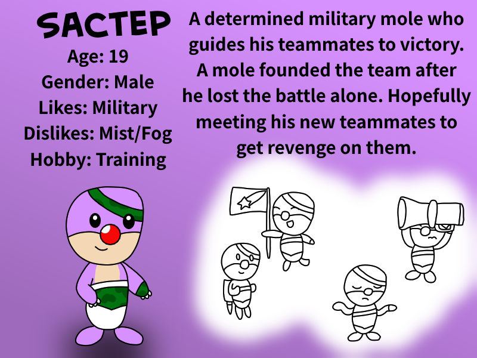
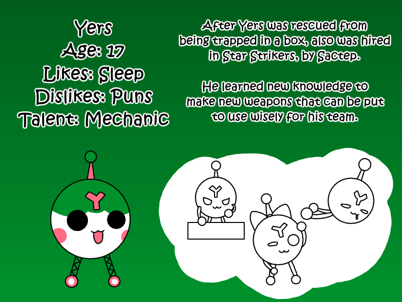
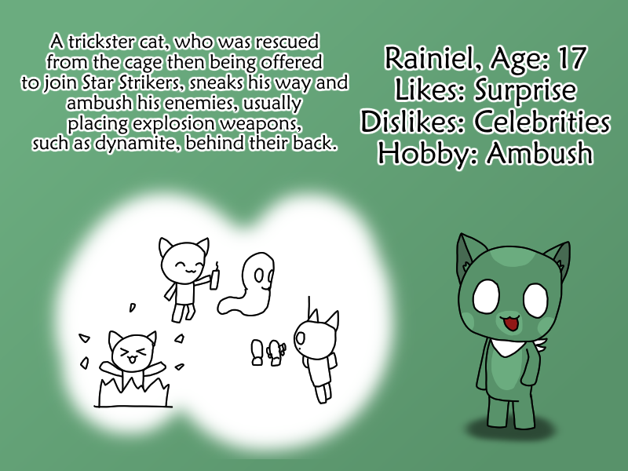
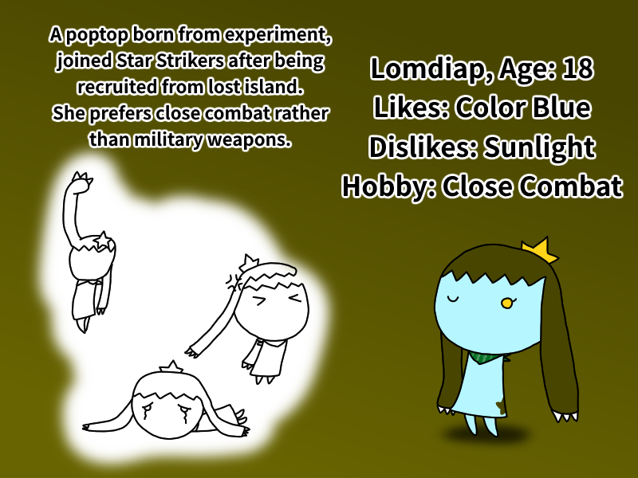

Sactep (Mole's World): A determined military mole who guides his teammates to victory. His weapon of choice? Bazooka line.

Yers (Mizuiro Blood): A skilled grenadier and a robot capable of creating multiple distinct weapons.

Rainiel (DNAxCAT): A cunning feline stealthily approaches and ambushes its adversaries, typically positioning explosive weapons, like dynamite, behind their backs.

Lomdiap (Poptop from Starbound): Her preferred weapons are close combat abilities like Fire Punch and Dragon Ball. She is a poptop who joined later after being recruited from the lost island.
